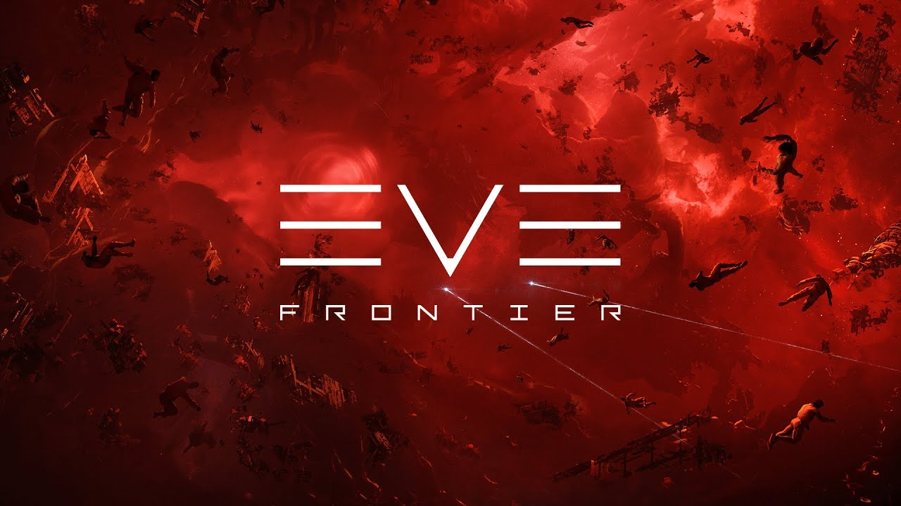
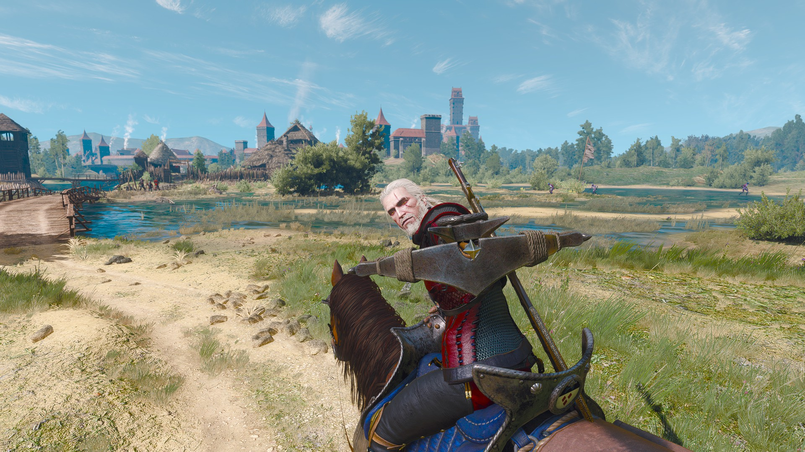
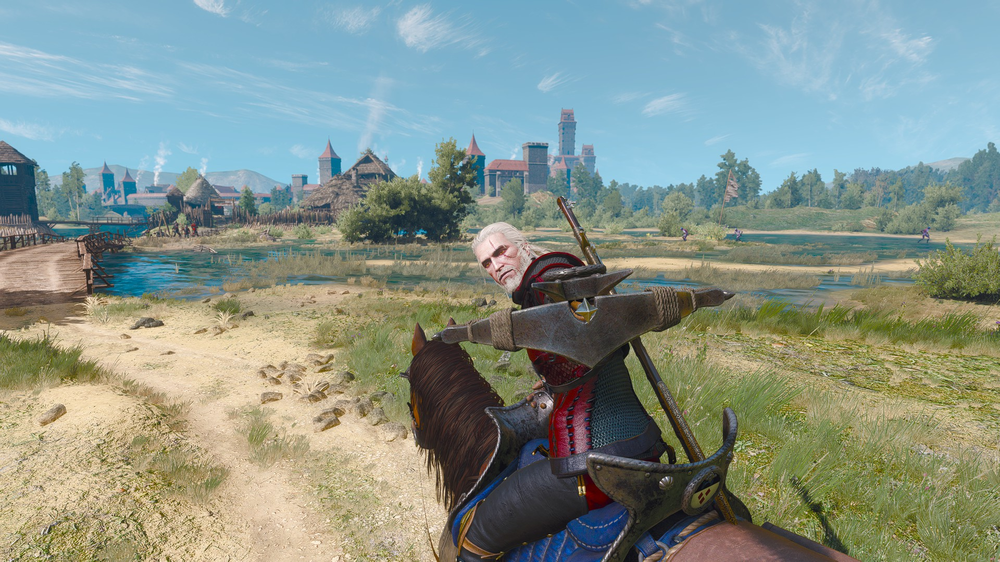

Моя игровая статистика
0+
Часов в играх
0
Достижений в Steam
0
Игр в коллекции
Топ-5 любимых игр
Сейчас играю
«Самые ценные достижения — те, что мы ставим перед собой…» «Самые ценные достижения в играх — те, что мы ставим перед собой. Я заранее придумываю челленджи: пройти уровень без урона, пройти игру без фаст тревелов или миникарты, построить мегабазу. Эти личные цели не дают мне бросить игру на полпути и превращают каждую сессию в маленький квест.»

Expeditions: A MudRunner Game
47 % пройдено
Мои челленджи
- Закрыть полностью карту только на скаутах x / x
- Повредить колеса на скауте макс. скоростью 0 / 1
Мои достижения
- Первые 100 км пробег
- Первые 200 км пробега 140 / 200
- Эвакуация тяжелого вездехода скаутом (без мощностей вездехода) 2 / 5

EVE Frontier
32 % пройдено
Мои челленджи
- Набить 10+ killmark на одном корабле 4 / 10
- Построить last принтер на месте дислокации 2 / 4
Мои достижения
- Первое убийство в "чесном" PvP
- Открыть 5 секретных секторов 3 / 5
- Убить стационарными турелями 0 / 1
Мои игры в Steam
Разработка
Скриншоты
 
